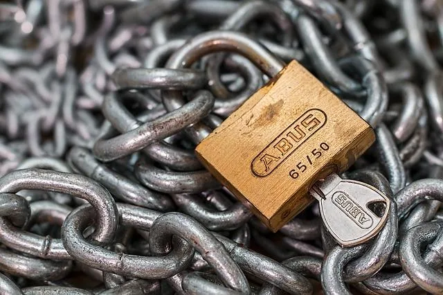

{kind=link}
{kind=link}
We believe security software like Kicksecure needs to remain Open Source and independent. Would you help sustain and grow the project? Learn more about our 11 year success story and maybe DONATE!

This page is an introduction into computer security and motivation to care about computer security.
Kicksecure comes with many security features. Kicksecure is Security Hardened by default and also provides extensive Documentation including a System Hardening Checklist. The more you know, the safer you can be.
Essentials
 "Security is a process, not a product." -- Bruce Schneier,
encryption and security expert. [1]
"Security is a process, not a product." -- Bruce Schneier,
encryption and security expert. [1]
It is important to understand that Kicksecure and all general software cannot guarantee absolute security; 'perfect security' is a mirage. The reason is flaws in hardware and software are ever-present, as continual upgrades and patches inevitably introduce further coding [2] or design errors which attackers of varying skill can profit from. As a consequence, the best approach is to try and mitigate risk exposure and provide defense in depth. [1] [3]
With this understanding, a material improvement in security requires 'raising the bar' against potential attackers and eavesdroppers: [4]
Security is a process, not a product. It is also about economics. Briefly explained, each attacker has a set of capabilities, privileges, and a certain amount of budget, time and motivation. Given enough of these resources, security of any process will fail; the goal when securing a system is to add layers of security that make attacks too expensive. Nation-state actors have massive budgets, and no single system can be made secure enough against targeted attacks. However, if widely deployed, systems that cannot be compromised with automated attacks, increase the attacker's cost linearly and thus force the attacker to pick targets. Such systems are the only way to make mass surveillance infeasibly expensive.
In the case of Kicksecure, relative security can be improved by hardening the platform as much as possible. If you are unfamiliar with Kicksecure / Linux or have limited knowledge of computer security topics, then it is recommended to first read these resources:
If you have more time available, then it is recommended to read the Documentation widely.
Motivation
If motivation is needed to secure your computer, refer to these articles:
- The Scrap Value of a Hacked PC, Revisited (blog post).
- The Value of a Hacked Email Account (blog post).
- Social Engineering: hacking at defcon
- Two-factor authentication 2FA: Two-Factor Authentication Phishing From Iran
If the reader is time-poor, then just review the Hacked PC or Hacked Email figures, or briefly scan the summary tables below.
Hacked PC
US journalist and investigative reporter Brian Krebs notes there are a large number of malicious uses for hacked PCs, including ransomware, bot activity, stolen account credentials, webmail spam and much more.
Category |
Attacker Activity |
|---|---|
Account Credentials |
eBay/Paypal fake auctions Online gaming, website FTP, Skype/VOIP
credentials |
Bot Activity |
Zombies: spam, DDoS extortion, click fraud and CAPTCHA-solving |
Email Attacks |
Webmail spam Stranded abroad advance scams |
Financial Credentials |
Bank account and credit card data Stock trading account |
Hostage Attacks |
Fake anti-virus Ransomware and email account ransom |
Reputation Hijacking |
Facebook, Twitter, LinkedIn, Google |
Virtual Goods |
Online gaming characters, goods/currency OS and PC game license keys |
Web Server |
Phishing, malware download site |
Hacked Email Account
Krebs also notes the significant value of a hacked email account. Just one breach of an online email service permits the theft of valuable personal data, account/contact harvesting, re-sale of retail accounts, spam and much more. An email account is a particularly weak link, since once under the attacker's control they can reset the password, along with the passwords of many linked services and accounts.
Category |
Attacker Activity |
|---|---|
Employment |
Forwarded work documents and work email Fedex, UPS, Pitney Bowes
account |
Financial |
Bank accounts Email account ransom |
Harvesting |
Email, chat contacts File hosting accounts |
Privacy |
Your messages, calendar, photos, Google/Skype chats Call records
(+ mobile account) |
Retail Resale |
Facebook, Twitter, Tumbler, Macys, Amazon, Walmart i-Tunes,
Skype, Bestbuy, Spotify, Hulu+, Netflix |
Spam |
Commercial email Phishing, malware |
Advanced Security Guide
After reading this chapter, it is recommended to refer to the Advanced Security Guide section for even more security advice.
Stay Tuned
It is recommended to read the latest Kicksecure news to stay in touch with ongoing developments, such as notifications about important security vulnerabilities, improved Kicksecure releases, other software updates and additional advice.
Footnotes
- https://www.schneier.com/essays/archives/2000/04/the_process_of_secur.html
- Security bugs generally fall into two categories: those which pose a passive threat due to eventual erroneous behavior, and the introduction of accidental vulnerabilities that are exploitable with malicious inputs.
- Schneier also notes several other security principles: limit privilege, secure the weakest link, use choke points, fail securely, leverage unpredictability, enlist the users, embrace simplicity, detect attackers, respond to attackers, be vigilant, and watch the watchers.
- https://github.com/maqp/tfc/wiki/Threat-model
- https://krebsonsecurity.com/2012/10/the-scrap-value-of-a-hacked-pc-revisited/ Figure 1.
- https://krebsonsecurity.com/2013/06/the-value-of-a-hacked-email-account/ Figure 1.
Categories: Documentation